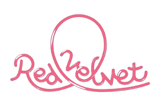
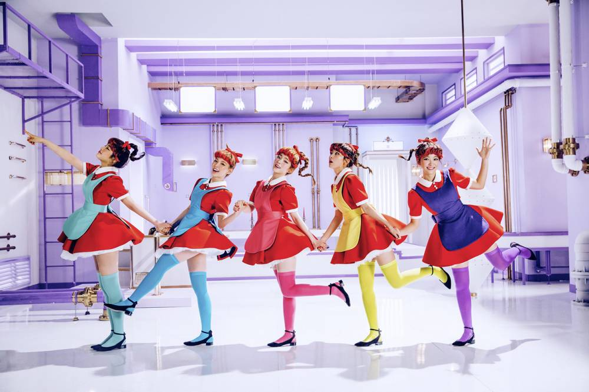
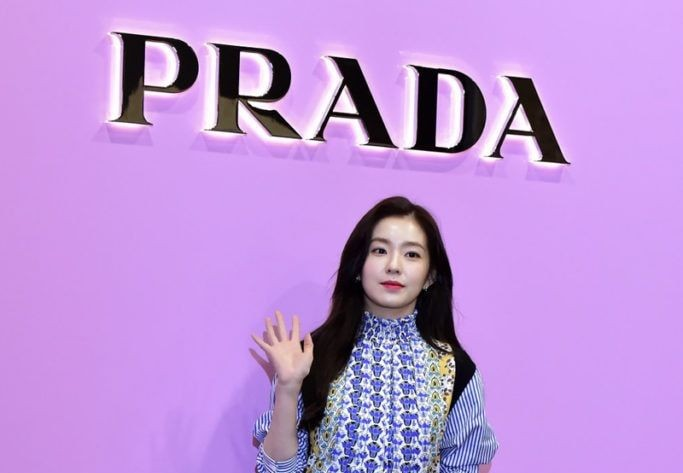

El nombre Red Velvet representa la dualidad en su concepto. "Red" simboliza su lado enérgico, vibrante y juvenil, mientras que "Velvet" refleja su faceta elegante, sofisticada y sensual. Esta combinación se ve reflejada en su música, videoclips y presentaciones, donde alternan entre estos dos estilos para ofrecer una experiencia variada a sus seguidores.

Red Velvet es conocido por su enfoque estético innovador. Desde su debut, han utilizado colores vibrantes, diseños llamativos y estilismos únicos para diferenciarse. Sus conceptos suelen jugar con lo surrealista, lo teatral y lo cinematográfico, incorporando elementos que van desde cuentos de hadas hasta escenarios oscuros y misteriosos.

A lo largo de su carrera, han sido embajadoras de marcas de lujo, maquillaj. cuidado de la piel y han impuesto tendencias en la moda. Irene, por ejemplo, ha trabajado con marcas como Prada, mientras que otras integrantes han sido reconocidas por su estilo en revistas y pasarelas. Su estética visual ha inspirado a muchos dentro y fuera de la industria del K-pop.
